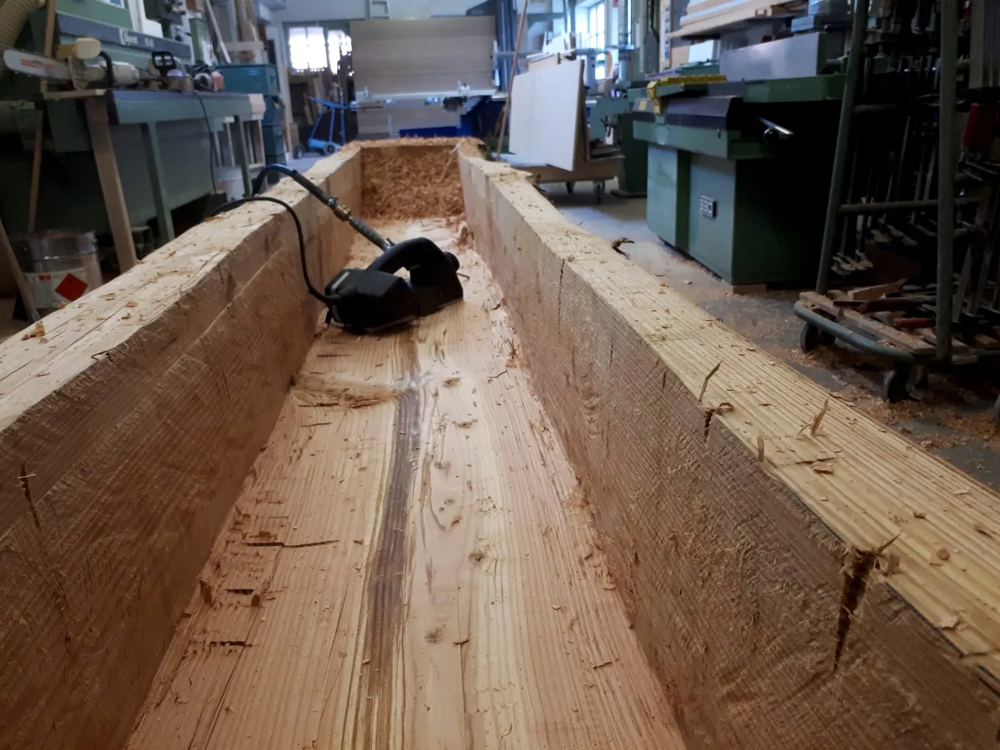
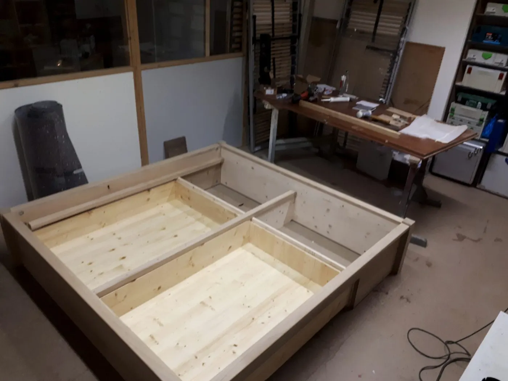
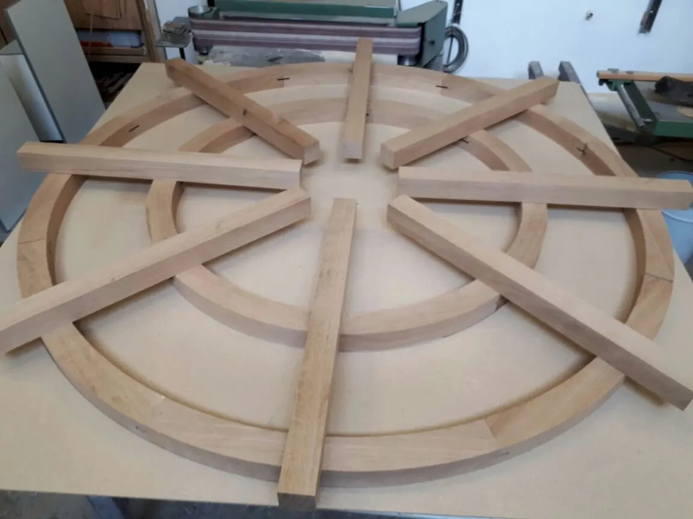

Sie reden mit dem, der es auch baut.Björn Schillinger, Schreinermeister
Kein Verkäufer, kein Callcenter, keine Weitergabe an einen Monteur, den Sie nie gesehen haben. Ein Meister — von der Skizze bis zur letzten Schraube.
Über mich
Vom Ladenbau über die Diskothek in den Innenausbau.
Ein ungewöhnlicher Weg für einen Schreiner — und genau der Grund, warum hier Dinge möglich sind, die in einer reinen Möbelschreinerei selten vorkommen: geschwungene Formen, Licht als Bauteil, Materialien jenseits von Holz.
Holz an sich ist bei Weitem nicht alles, was das Schreinerhandwerk zu bieten hat. Zeitgenössische Materialien wie Glas, Acryl, Mineralwerkstoffe oder Stein sowie elektronische Bauteile wie LED-Beleuchtung oder gesteuerte Öffnungsmechanismen haben längst Einzug gehalten.
Ich bin Möbelschreiner, kein Bauschreiner. Ich setze keine Fenster und keine Haustüren ein — ich baue das, was danach hineinkommt und dort bleibt.
Der Weg hierher
Fünf Stationen, ein Handwerk.
- 2001 – 2003
Ausbildung zum Schreiner
In einer Schreinerei mit Schwerpunkt Laden- und Messebau. Dort lernt man, dass ein Möbel nicht nur halten, sondern auch etwas darstellen muss.
- ab 2004
Selbstständig — Diskothekenbau
Schwerpunkt auf geschwungener, organischer Raumgestaltung und Beleuchtung mit damals neuester LED-Technik. Aus dieser Zeit stammt die Lichtfuge, die heute in fast jedem meiner Möbel steckt.
- 2010
Meistertitel für Schreiner
Nach einer personellen und räumlichen Umstrukturierung wurde der Wunsch, in den exklusiven Innenausbau zurückzukehren, mit dem Meistertitel Wirklichkeit.
- seit 2010
Der Raum als Thema
Fokus der Arbeiten ist seitdem der Raum an sich. Davon kann man nicht genug haben — ihn bestmöglich auszunutzen ist absolute Priorität geworden.
- seit 2016
Eigene Werkstatt in Germering
Über mehrere Schreinereien in München bis zum heutigen Standort: früher der Bastel Fritz, dann die Schreinerei Schmalix und seit 2016 Schreinermeister Schillinger.


Haltung
Respektvoll mit Ressourcen und Materialien umgehen.
Der respektvolle Umgang mit Ressourcen und Materialien sollte nicht nur angestrebt, sondern auch umgesetzt werden. Deshalb verwende ich FSC-zertifizierte Hölzer und Plattenwerkstoffe aus nachhaltiger Forstwirtschaft und behandle meine Oberflächen mit umweltzertifizierten Lacken und Ölen. Von der Verwendung von Tropenhölzern rate ich generell ab.
Wie ich arbeite
Ein Betrieb ohne Angestellte — und trotzdem nie allein.
Ich habe keine Angestellten. Das ist eine Entscheidung, keine Notlage: niedrige Fixkosten, kein Leasing, keine Kredite — und damit die Ruhe, einen Auftrag so zu bauen, wie er gehört, statt so, wie es gerade reichen muss.
Die Werkstatt teile ich mit Kollegen; wenn auf der Baustelle jemand mit anpacken muss, kommen Schreinermeister, mit denen ich seit Jahren arbeite. Sie sehen auf Ihrer Baustelle also nie einen Monteur, der nicht weiß, was er da einbaut.

- Gebaut wird in der eigenen Werkstatt in Germering — nicht bestellt und angeschraubt.
- Zugekauft wird nur, wo es besser ist: Beschläge, Auszüge, Fronten im Spritzwasserbereich.
- Sie haben einen Ansprechpartner. Vom ersten Aufmaß bis zur letzten Schraube derselbe.
- Einsatzgebiet ist Germering und der Westen von München — kurze Wege, kurze Reaktionszeiten.
Einsatzgebiet
Germering und der Westen von München.
Als Schreiner vor Ort bin ich jederzeit erreichbar — und auch zur Stelle, wenn's brennt. Wohnen Sie weiter weg? Fragen Sie trotzdem.
Anfrage
Reden wir über Ihren Raum.
Ein Foto und ein paar Maße genügen für den Anfang. Alles Weitere klären wir beim Aufmaß vor Ort.
82110 Germering
Wer in der Werkstatt steht, geht nicht immer ans Telefon — eine Nachricht genügt.